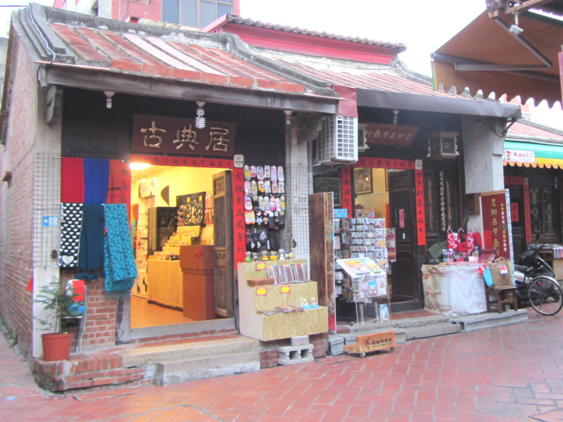
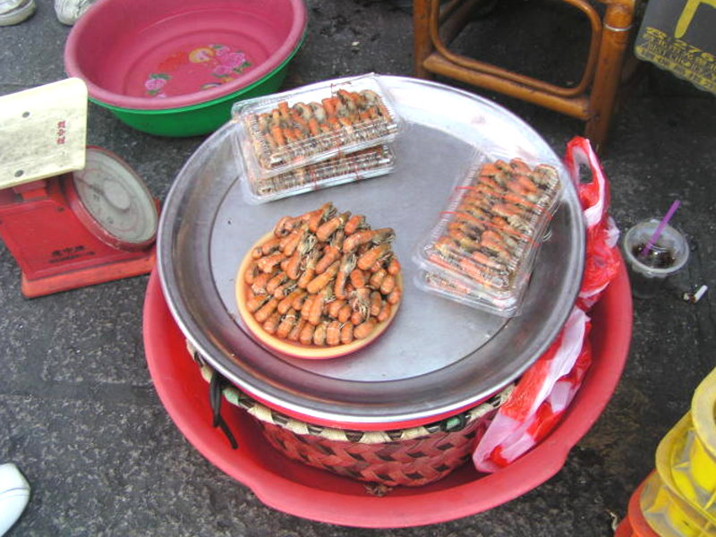
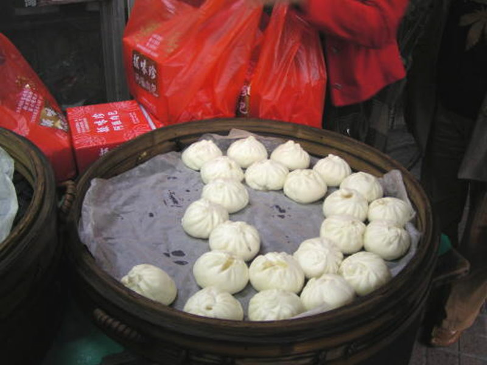

-
天后宮
鹿港天后宮俗稱『舊祖宮』，建於明朝末年，因為媽祖威靈顯赫，信徒日增，於雍正3年（西元1725年），由水師提督靖海侯施琅將軍之侄施世榜獻地遷建於現址。天后宮是鹿港人民信仰的中心，媽祖生日更是無法形容，全臺各地信徒更紛紛前來進香，宮中一年四季香煙不斷，真教人體會出宮廟香火鼎盛，這就是鹿港寶殿天后宮的盛況。
鹿港龍山寺的創建年代很早，根據民間相傳是在明末永曆七年（西元1653年），由肇善禪師創建。相傳肇善乃福建泉州的苦行僧，他親自雕刻了一尊觀音像，想獻往普陀山。卻在海上遇到狂風暴雨，因緣巧合下來到鹿港。肇善便在鹿港結廬苦修，並且在今日的大有街一帶建立一座廟，此廟便是龍山寺的前身。乾隆51年（1786）武官陳邦光倡議遷建，士紳林振嵩、許樂三主持遷建工程至現址。老街
不見天街是因為道路被雨棚蓋住，看不到天空而得名。鹿港「不見天街」為今日的中山路，清代稱為五福大街，分別為長興街、泰興街、和興街、福興街與順興街。為讓來此消費的買客避免受到炎陽、雷雨及冬季九降風的侵襲，街道兩旁的商家共同搭起亭蓋遮棚，中間開有天窗採光，因此不論陰晴寒熱，走在五福大街中購物就不受天候的干擾，這就是全台獨一無二的『不見天』街。
但由於昭和八年（1933年）鹿港實施市區改正，強制拆除不見天街及兩旁商家，之後並將道路拓寬為十五公尺。市區改正後的五福街屋立面都重新改建，採用洗石子工法，塑造當時流行的『現代藝術裝飾式樣』，整體外觀顯得簡潔有力，成為目前中山老街特殊的風格。木雕
傳統建築運用大量木雕裝飾，尤其在鹿港各大古廟，每一座廟都有雕飾精美絕倫的木雕，因此造就鹿港成為傳統木工藝的重鎮。除了建築雕刻外，鹿港的木雕還包含佛像、佛具、供桌等祭祀木器與家具製作。
其中最著名的為人稱「松林師」的李松林藝師，出生於傳統木雕世家，清道光年間，其曾祖父李克鳩渡海來台參與鹿港龍山寺的整修工作，從此定居鹿港。松林師於1985年榮獲教育部第一屆民族藝術薪傳獎，1989年獲教育部評定為重要民族藝術藝師。而松林師之么兒李秉圭，更曾獲全球中華藝術薪傳獎。除此之外鹿港的吳清波（1987年榮獲教育部民族藝術薪傳獎）、施鎮洋（1992年榮獲教育部民族藝術薪傳獎）、施至輝（1994年榮獲教育部民族藝術薪傳獎）、黃媽慶等木雕師傅的作品也深受各界肯定。蚵仔煎蚵仔煎為一種著名的台灣小吃，是使用新鮮的蚵仔（牡蠣）、蔬菜（多用茼蒿或小白菜）、雞蛋及太白粉芡水作成。全省各地都有蚵仔煎，但是因為鹿港的地理優越位置，蚵仔（牡蠣）的品質特別好，加上店家用料又非常大方，料多味美又實在，所以很多人來鹿港第一個要吃的就是蚵仔煎。除了蚵仔煎之外還有蚵仔湯、蚵嗲，同樣會讓你讚不絕口。
蝦猴蝦猴－又稱為「蝦蛄」，這是只有中部鹿港和台中才有的特有海鮮，是一道十分下酒的菜餚，每年清明節的前後是它的產卵期，也是品嚐的最佳時機。蝦猴不管用油炸的或者鹽漬當下酒菜的都相當的美味，位於天后宮及第一市場十字路口附近都有販售，不妨前往嚐嚐哦！鹿港的有句諺語說：一隻蝦猴配三碗粥。
肉包鹿港的肉包可以說是從中山路上振味珍－阿振肉包開始出名的。阿振肉包的特色就是皮Q、餡多、肉好吃，選肉要選豬後腿，因為比較有嚼勁。肉包的皮一定要使用中筋麵粉，用酵母是進口酵母菌，大概發酵2小時，做到香、軟、Q，這是一個好肉包的必備條件。

目前有名的肉包店還有老龍師、巧味珍等店，每到假日大多大排長龍，深受各地遊客喜愛！鹿港茶點「富貴三代，方知飲食。」造就了鹿港人對飲食文化的講究，故有今日百年糕點。鹿港當時文風鼎盛，許多文人常聚在一起飲茶作詩，為了顯出獨特的風雅品味，特地從泉州請來手藝精良的糕餅師傅製作各式美味的茶食糕點，招待這些文人。
著名的茶點有：牛舌餅、綠豆糕、鳳眼糕、豬油荖（分為米荖、麻荖、花生荖三種）、麵茶、彩頭酥等。麵線糊全省各地都有蚵仔麵線、大腸麵線，而鹿港本地特有的吃法，麵線黏糊且麵線又短，只能用湯匙來舀，筷子是夾不起來的。放的料不是大腸或蚵，就是小肉塊、蛋和蝦米，滋味別具一番風味。
鹿港地區麵線糊用的麵線是紅麵線，因為紅麵線是純手工的，而白麵線是用機器製成的。麵線一定要細要短才能芶芡，芶芡比例要視情況而定，還有勾芡用的太白粉是荷蘭製的太白粉，蝦米也很重要，一定要新鮮的蝦米才能夠下鍋。聯絡我們
彰化縣都市計畫公園清單序號 名稱 地圖下載 路線規劃